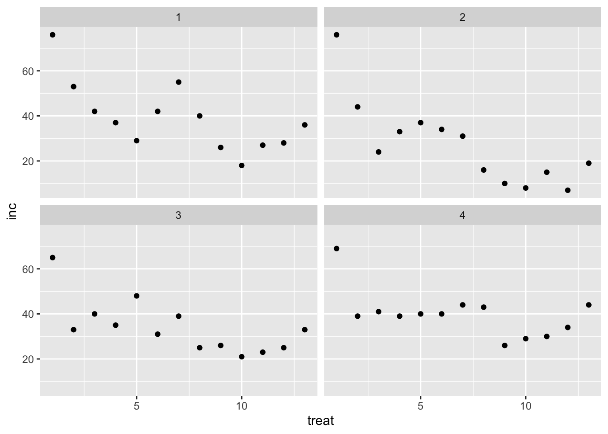

# Evita que se muestren advertencias y mensajes#| warning: false#| message: false# Cargar librerías necesariaslibrary(tidyverse) # Para manipulación y visualización de datoslibrary(readxl) # Para leer archivos de Excellibrary(DT) #Para visualizar tablas dinámicaslibrary(patchwork)# Cargar la librería patchwork para juntar gráficos
Cargando el Conjunto de Datos
Codigo
# Leer el conjunto de datos 'mofo' desde el archivo 'dados-diversos.xlsx'mofo <-read_excel("dados-diversos.xlsx", "mofo")mofo%>% DT::datatable(extensions ='Buttons', options =list(dom ='Bfrtip', Buttons =c('excel', "csv")))
Visualización Inicial de los Datos
Podemos visualizar los datos de diferentes maneras, como gráficos de dispersión, histogramas y boxplots. Inicialmente, visualizaremos los datos de incidencia (inc) por tratamientos y por estudio.
Codigo
# Gráfico de dispersión de la incidencia por tratamientos y estudiosmofo |>ggplot(aes(treat, inc)) +facet_wrap(~study) +# Facetas por estudiogeom_point() # Puntos de dispersión

Histograma de Incidencia y Escleródio
Codigo
# Histograma de incidenciainc <- mofo |>ggplot(aes(inc)) +geom_histogram()inc
Codigo
# Histograma de escleródiomofo |>ggplot(aes(scl)) +geom_histogram()
Boxplot de Escleródio
Codigo
# Boxplot de escleródioscl <- mofo |>ggplot(aes(scl)) +geom_boxplot()scl
Juntar Gráficos con Patchwork
Codigo
# Juntar los gráficos de incidencia y escleródioinc / scl
Cálculo de la Media
Codigo
# Calcular la media de la columna 'scl'mean(mofo$scl)
[1] 1639.096
Transformación de los Datos
Podemos transformar los datos de diferentes maneras, siendo las más comunes el logaritmo y la raíz cuadrada.
Transformación Logarítmica
La transformación logarítmica es útil cuando los datos tienen una distribución asimétrica positiva o cuando la variación aumenta exponencialmente con el aumento de los valores.
Codigo
# Transformar los datos usando logaritmomofo2 <- mofo |>mutate(scl2 =log(scl)) # Crear nueva columna 'scl2' con el logaritmo de 'scl'mofo2%>% DT::datatable(extensions ='Buttons', options =list(dom ='Bfrtip', Buttons =c('excel', "csv"))) |>formatRound("scl2", 2)
Codigo
# Visualizar los datos transformados en logaritmo con un histogramamofo2 |>ggplot(aes(scl2)) +geom_histogram(bins =10)
Transformación de Raíz Cuadrada
La transformación de raíz cuadrada es útil para reducir la asimetría en datos con una distribución asimétrica positiva.
Codigo
# Transformar los datos usando raíz cuadradamofo2 <- mofo |>mutate(scl2 =sqrt(scl)) # Crear nueva columna 'scl2' con la raíz cuadrada de 'scl'mofo2%>% DT::datatable(extensions ='Buttons', options =list(dom ='Bfrtip', Buttons =c('excel', "csv"))) |>formatRound("scl2", 2)
Codigo
# Visualizar los datos transformados en raíz cuadrada con un histogramamofo2 |>ggplot(aes(scl2)) +geom_histogram(bins =10)
Histograma de Productividad
Codigo
# Histograma de la variable 'yld' (productividad)mofo2 |>ggplot(aes(yld)) +geom_histogram(bins =10)
Usando la Función arrange
La función arrange() se utiliza para ordenar filas. Ordena los datos por orden creciente o decreciente.
Cargando el Conjunto de Datos ‘Survey’
Codigo
# Leer el conjunto de datos 'survey' desde el archivo 'dados-diversos.xlsx'survey <-read_excel("dados-diversos.xlsx", "survey")
Ordenar y Filtrar Datos
Codigo
# Filtrar, contar, ordenar, renombrar y clasificar datos del conjunto 'survey'survey |>filter(state =="RS") |># Filtrar por estado "RS"count(species, residue) |># Contar número de filas por especie y residuoarrange(n) |># Ordenar por número de observacionesrename(res = residue) |># Renombrar columna 'residue' a 'res'mutate(n_class =case_when( n <30~"baixa", # Clasificar como "baixa" si n < 30TRUE~"Alta"# Clasificar como "Alta" en caso contrario ))
# A tibble: 4 × 4
species res n n_class
<chr> <chr> <int> <chr>
1 Fspp corn 22 baixa
2 Fspp soybean 26 baixa
3 Fgra corn 147 Alta
4 Fgra soybean 255 Alta
### Cargando las Librerías Necesarias```{r}# Evita que se muestren advertencias y mensajes#| warning: false#| message: false# Cargar librerías necesariaslibrary(tidyverse) # Para manipulación y visualización de datoslibrary(readxl) # Para leer archivos de Excellibrary(DT) #Para visualizar tablas dinámicaslibrary(patchwork)# Cargar la librería patchwork para juntar gráficos```### Cargando el Conjunto de Datos```{r}# Leer el conjunto de datos 'mofo' desde el archivo 'dados-diversos.xlsx'mofo <-read_excel("dados-diversos.xlsx", "mofo")mofo%>% DT::datatable(extensions ='Buttons', options =list(dom ='Bfrtip', Buttons =c('excel', "csv")))```### Visualización Inicial de los DatosPodemos visualizar los datos de diferentes maneras, como gráficos de dispersión, histogramas y boxplots. Inicialmente, visualizaremos los datos de incidencia (`inc`) por tratamientos y por estudio.```{r}# Gráfico de dispersión de la incidencia por tratamientos y estudiosmofo |>ggplot(aes(treat, inc)) +facet_wrap(~study) +# Facetas por estudiogeom_point() # Puntos de dispersión```### Histograma de Incidencia y Escleródio```{r}# Histograma de incidenciainc <- mofo |>ggplot(aes(inc)) +geom_histogram()inc``````{r}# Histograma de escleródiomofo |>ggplot(aes(scl)) +geom_histogram()```### Boxplot de Escleródio```{r}# Boxplot de escleródioscl <- mofo |>ggplot(aes(scl)) +geom_boxplot()scl```### Juntar Gráficos con Patchwork```{r}# Juntar los gráficos de incidencia y escleródioinc / scl```### Cálculo de la Media```{r}# Calcular la media de la columna 'scl'mean(mofo$scl)```## Transformación de los DatosPodemos transformar los datos de diferentes maneras, siendo las más comunes el logaritmo y la raíz cuadrada.### Transformación LogarítmicaLa transformación logarítmica es útil cuando los datos tienen una distribución asimétrica positiva o cuando la variación aumenta exponencialmente con el aumento de los valores.```{r}# Transformar los datos usando logaritmomofo2 <- mofo |>mutate(scl2 =log(scl)) # Crear nueva columna 'scl2' con el logaritmo de 'scl'mofo2%>% DT::datatable(extensions ='Buttons', options =list(dom ='Bfrtip', Buttons =c('excel', "csv"))) |>formatRound("scl2", 2)``````{r}# Visualizar los datos transformados en logaritmo con un histogramamofo2 |>ggplot(aes(scl2)) +geom_histogram(bins =10)```### Transformación de Raíz CuadradaLa transformación de raíz cuadrada es útil para reducir la asimetría en datos con una distribución asimétrica positiva.```{r}# Transformar los datos usando raíz cuadradamofo2 <- mofo |>mutate(scl2 =sqrt(scl)) # Crear nueva columna 'scl2' con la raíz cuadrada de 'scl'mofo2%>% DT::datatable(extensions ='Buttons', options =list(dom ='Bfrtip', Buttons =c('excel', "csv"))) |>formatRound("scl2", 2)``````{r}# Visualizar los datos transformados en raíz cuadrada con un histogramamofo2 |>ggplot(aes(scl2)) +geom_histogram(bins =10)```### Histograma de Productividad```{r}# Histograma de la variable 'yld' (productividad)mofo2 |>ggplot(aes(yld)) +geom_histogram(bins =10)```## Usando la Función `arrange`La función `arrange()` se utiliza para ordenar filas. Ordena los datos por orden creciente o decreciente.### Cargando el Conjunto de Datos 'Survey'```{r}# Leer el conjunto de datos 'survey' desde el archivo 'dados-diversos.xlsx'survey <-read_excel("dados-diversos.xlsx", "survey")```### Ordenar y Filtrar Datos```{r}# Filtrar, contar, ordenar, renombrar y clasificar datos del conjunto 'survey'survey |>filter(state =="RS") |># Filtrar por estado "RS"count(species, residue) |># Contar número de filas por especie y residuoarrange(n) |># Ordenar por número de observacionesrename(res = residue) |># Renombrar columna 'residue' a 'res'mutate(n_class =case_when( n <30~"baixa", # Clasificar como "baixa" si n < 30TRUE~"Alta"# Clasificar como "Alta" en caso contrario ))survey %>% DT::datatable(extensions ='Buttons', options =list(dom ='Bfrtip', Buttons =c('excel', "csv")))```